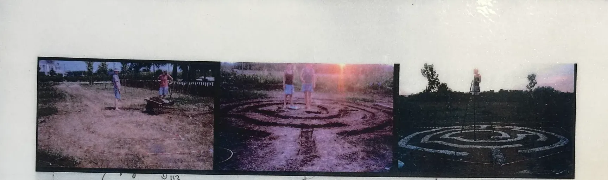

The walk
The plane-tree walk is a quiet, restful passage between trees, plane trees to be exact, which shelter “the labyrinth of life” in their shade. You can stroll, play, meditate, think, or simply watch, or walk the labyrinth.
Plane trees are among the species best at absorbing CO₂. They also regulate humidity and temperature, give shade and soften noise.
Their bark gives the trunk a dappled look in many shades, from grey through ochres and browns, which makes them singular, unmistakable and a little magical.
It changes with the seasons. In spring and summer the planes are dressed in thick green leaves, giving the walk a green roof that shelters and strokes the labyrinth and the people walking it. In autumn the falling leaves lay a carpet of ochres and browns that hides the labyrinth completely. And in winter the labyrinth is uncovered again, along with the little nests that sparrows, greenfinches, serins and goldfinches built in spring and summer to raise their young.
At the end of the walk
At the end of the walk you find a sheltered, welcoming spot. A great mulberry tree casts its shade over a well-hidden little square, surrounded by some unusual places: a tipi, the secret den, and a solar dryer. They are almost magical places that let you feel things quite unlike anything before. A starry night makes them perfect.
- The tipi
- It is hidden under a covering of honeysuckle that makes it feel like nowhere else. Inside you can meditate, chat in a small group, spend a romantic night…
- The secret den
- Tucked beneath an iron dome covered in thick climbing ivy is this hidden refuge. As if you were stepping inside mother earth, it takes you in and protects you, and lets you feel mystery and reflection.
The labyrinth of life

The “Labyrinth of life” offers you a path that, as in life, lets you choose. It begins with the Reiki symbol called Choku-rei, and from the first step you decide whether to turn right or left.
Along the way you meet forks that make you choose: carry straight on, or, if curiosity tempts you, take the turning at each crossroads towards new places, where you will find a series of symbols that will surprise you and tell you a great deal.
On the way you will also find reflexology circles that invite you to take off your shoes for a foot massage, stimulating the reflex points and making your walk much gentler.
Marked on the plan: the reflexology circles (a flower and a star), the solar cross, yin and yang, the triskele and the Choku-rei.
How it was built

These pages show the labyrinth being built: the original pencil drawing, the ground marked out, the path dug, and the finished labyrinth edged in stone.
Two images sit beside the design as inspiration: a prehistoric rock carving from Portela da Laxe (Viascón, Pontevedra) for the symbols, and an Egyptian relief from Saqqara, “the tomb of the great physician”, for the reflexology corner.
The symbols: Choku-rei
It directs energy to the physical body. It goes by several names, such as “the power is here”. It is a symbol of power and acts as a switch that opens the flow of energy: “put all the power of the universe here”.
Curiously, it can both amplify energy and reduce it. Drawn clockwise it amplifies (for loss of balance, for example); drawn anticlockwise it reduces, as with Parkinson's or nervous tics, or a growth or disorder one wishes to lessen.
It is drawn with the middle finger or the palm of the hand, in a single stroke. It can also be visualised in the mind.
Using it is simple: draw it once and recite the mantra three times, very softly or in your head. It is used to shorten a treatment, cleanse a place, or focus work on an organ, by drawing it several times and reciting the mantra over the affected spot.
Common uses of the symbol
- Easing pain from injuries.
- Improving concentration, “grounding” yourself.
- Strengthening one's healing abilities.
- Drawing a space around the person receiving treatment to keep negative energies away.
- Clearing a room of negative energy by drawing or visualising the symbol on doors, corners, ceiling and floor; energy moves in circles and gathers in corners.
- To cleanse a place, draw it at the entrance facing inwards; once inside, draw it on each wall, the ceiling and the floor to protect and seal.
- Over food and water, which, if drained of energy, become wholesome and healing.
- Over medicines, to boost their good effects and lessen possible side effects.
- For ailments that come from overwhelming anger, hatred or sadness.
- It is recommended in every treatment, especially in the first days, for a deep cleanse. In short, it works mainly on the physical body.
- For protecting yourself, your family, your home, your car, doors and windows.
- Whenever a negative thought comes, draw it at once.
- For bringing abundance: picture clearly what you are asking for, without forcing anyone's free will.
I ask for this, or its equivalent, or something better, in keeping with free will, so long as it harms no one and all is for the good.
This text records the Reiki tradition as it appears in the book; it is not medical advice.
Yin and yang
It comes from Chinese philosophy, though it runs through much of Eastern thought. It is a cosmological principle that explains the duality of everything in the universe. Everything has its opposite, but not absolutely, only relatively, since nothing is entirely yin or entirely yang.
Balance comes from placing a part of each inside the other, with a winding line between them that stands for the alternation of forces. A circle surrounds and closes the whole symbol, standing for the All. That is how complete harmony is reached.
- There is yang in yin and yin in yang: each is always within the other.
- They form a dynamic balance: as one grows, the other shrinks. Water turns to vapour and rises, but too much vapour in the clouds ends up as rain.
- They depend on each other: neither can exist alone. There is no day without night.
- What is hot (yang) can be boiling or lukewarm; what is cold (yin) can be cool or frozen.
- They turn into their opposites: night becomes day, warmth cools, a birth brings a death.
- They oppose each other, but relatively: winter opposes summer, though a summer day can be cold.
Solar cross
It may well be the oldest religious symbol in the world, found in Asian, American, Indian and European religions, pagan ones included. A cross within a circle is the simplest possible picture of opposite poles joined together.
It stands for the sun, and each of its four parts is a season, the two equinoxes and two solstices that make up the Wheel of the Year; also the four elements (air, fire, water, earth), the four directions, the four winds…
It also speaks of opposites set against each other: earth and sky, life and death, up and down, right and left, active and passive, feminine (horizontal) and masculine (vertical).
The triskele
Its name comes from Breton Celtic and means “three wings”: three spirals turning around a centre. Three is the most sacred number in Celtic culture, standing for perfection and balance.
It is a solar symbol for the three elements (air, earth and water), the three dimensions (height, length and width), the three parts of a being (body, spirit and soul), or the three ages of life (child, youth and old age).
It was the druids' highest symbol, and only they could wear it; to them it meant learning, past, present and future. It also stands for the balance of body, mind and spirit, beginning and end, evolution and growth. It was used to heal wounds and ease fevers, and worn as a talisman of fertility, renewal and life force.
In Asturias, since medieval times, triskeles were carved or painted on the wooden walls of hórreos, the raised granaries, to protect the harvest stored inside.
Foot reflexology
Two foot-reflexology circles, a star and a flower, invite you to take your shoes off and treat your feet to a relaxing massage.
A sign helps you notice which parts of the body are lowest in energy, which your feet give away through their most sensitive spots.